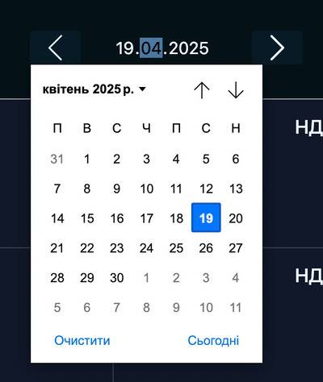

Calendar
Застосунок зберігає стан фільтрів після перезавантаження сторінки.
Calendar використовує localStorage як сховище даних.
Дає змогу зберігати, переглядати, редагувати та видаляти події.
Користувач заходить у застосунок і бачить сторінку, яка складається з:
- кнопки відкриття форми та створення події (лівий верхній кут);
- фільтру за датою. За замовчанням обрано поточний місяць;
- сітки календаря обраного у фільтрі місяця, яка складається з днів
Комірка містить:
- номер дня місяця
- день тижня
- список подій
Кожен запис має:
- title запису
- кнопку редагування події
- кнопку видалення події
Комірка поточного дня, візуально виділена.
Місяці перемикаються кнопками
Кнопка календаря відкриває date picker, де є можливість обрати рік і місяць.
Створення події
Створити подію можна кліком на кнопку створення події (лівий верхній кут), або кліком на комірку календаря.
Клік на створення події:
- Відкривається незаповнена форма, яка складається з трьох полів:
- Title (required)
- Description
- Date
- Форму можливо закрити кліком у будь-яку зо поза формою або Esc.
- Кнопка Save зберігає та закриває форму.
- Кнопка неактивна, доки обовʼязкові поля не будуть заповнені.
При кліку на комірку дня в календарі. Поле Date у заповнено автоматично.
Редагування подій
Клік на іконку редагування:
- Відкривається заповнена форму в режимі редагування
- Кнопка Save оновлює подію та закриває форму
Перегляд подій
Клік на title події відкриває моадльне вікно з деталями
Видалення подій
Клік на іконку видалення видаляє подію з календаря.